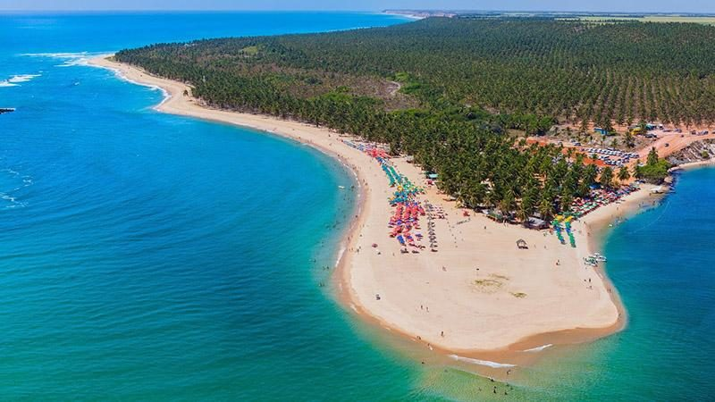
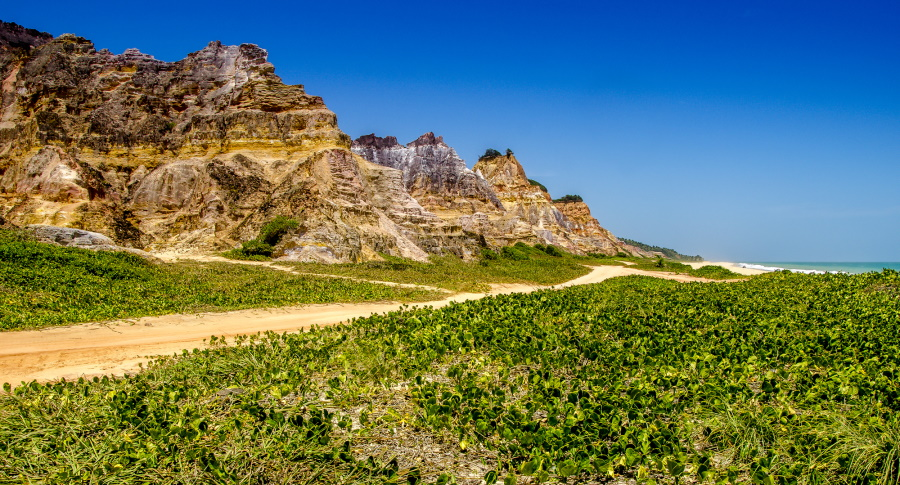
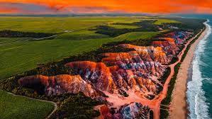
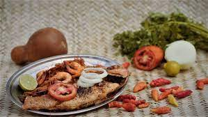
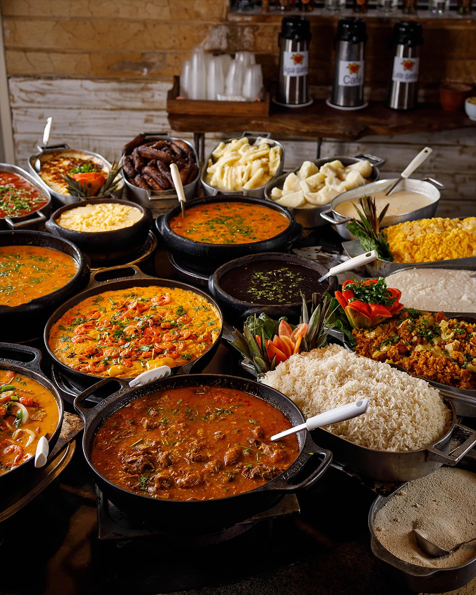

~Praia do Gunga~

Você está em busca de um destino de férias incrível e fora dos circuitos habituais? Se sim, a Praia do Gunga é uma jóia escondida que certamente irá superar suas expectativas!Localizada em um trecho intocado de areia branca e macia no deslumbrante litoral brasileiro, permaneceu relativamente desconhecida até recentemente – tornando-a perfeita para aqueles que buscam paz e tranquilidade.Com águas cristalinas cheias de vida marinha vibrante, belas dunas ondulantes perfeitas para um passeio romântico e muitas atividades para todo tipo de viajante, esta cidade praiana exemplifica a beleza natural; criando experiências inesquecíveis a serem guardadas para sempre.
-Como chegar a praia do Gunga

Para chegar à Praia do Gunga, o visitante pode ir de ônibus ou carro. O percurso dura cerca de 45 minutos da capital até o local, indo pela AL 101 – Sul.Ao chegar na praia, o acesso por terra é feito por uma fazenda de cocos. Apesar da propriedade ser privada, o trajeto de carro ou moto é gratuito. No caminho, fique atento às placas de estacionamento e preservação do lugar. No mais é só curtir a paisagem.
-Passeios na praia do Gunga
Passeio de buggy
Explorar os cantos intocados do paraíso é algo que muitos aventureiros e viajantes anseiam. Alagoas no Brasil oferece uma oportunidade de fazer exatamente isso, com sua espetacular praia do Gunga. Para aproveitar ao máximo sua visita e aproveitar uma experiência verdadeiramente única, considere um passeio de buggy ou quadriciclo!As temperaturas são quentes o ano todo, a paisagem é deslumbrantemente bela com suas falésias e não há melhor maneira de se locomover do que experimentar tudo o que tem a oferecer por trás do volante.Você poderá explorar passeios incríveis com praia de areia branca acompanhada por palmeiras que se estendem em direção ao céu uma visão que hipnotizará até mesmo o viajante mais experientes.
Passeio às falésias

As falésias do Gunga tem uma paisagem hipnotizante oferecendo algumas das vistas mais deslumbrantes que você já viu, e sua combinação única de praias de areia dourada, penhascos altos de cor laranja-avermelhada, vegetação verde exuberante e águas azuis cristalinas o deixarão sem fôlego. O passeio para as falésias pode ser feita de 4X4 normalmente aluga-se. Nesse passeio os turistas passam por uma aldeia de pescadores um cenário encantador, que vale a pena conhecer.
-Gastronomia local

A cidade oferece uma variedade de opções gastronômicas para satisfazer todos os gostos. Aqui estão alguns dos melhores pratos para se deliciar com a culinária local: Sururu: experimente o famoso sururu, um molusco típico da região de Alagoas. É frequentemente preparado em deliciosos ensopados ou como recheio de tortas e empadas. Frutos do mar: aproveite a proximidade do mar e prove uma grande variedade de frutos do mar frescos. Peça pratos como camarão, lagosta, peixe grelhado ou moqueca de frutos do mar. Tapioca: a tapioca não poderia faltar, uma iguaria tradicional nordestina feita de massa de mandioca. É uma opção versátil que pode ser servida com diversos recheios, como queijo coalho, coco, carne de sol, chocolate e muito mais. As barracas de tapioca são comuns na região e oferecem uma experiência autêntica. Comida regional: explore a gastronomia regional de Alagoas com pratos como o baião de dois, o feijão-verde, a macaxeira (aipim) e a carne de sol. Esses pratos são preparados com ingredientes locais e têm um sabor único e marcante. Bebidas típicas: não deixe de provar a cachaça artesanal e o licor de jenipapo, típicos da região. Essas bebidas são muito apreciadas pelos visitantes e moradores locais.Ao explorar a verdadeira culinária em Pajuçara, você terá a oportunidade de experimentar pratos autênticos da região e mergulhar na rica cultura alagoana. Não deixe de visitar o ibis Styles Kitchen, no ibis Styles Maceió Pajuçara, para provar o melhor da cozinha regional a poucos passos do conforto!
Comidas sureridas

- Chiclete de camarão: Camarões envoltos em molho cremoso e queijo
- Siri mole ao coco: Siri mole refogado com leite de coco, cebola, pimentão, coentro, tomate, farinha, e mandioca
- Macaxeira com carne de sol
- Caldinho de sururu: Caldo saboroso feito com o molusco sururu
- Moqueca de frutos do mar: Preparada com peixes frescos e leite de coco
- Pituzada: Camarões grandes cozidos em molhos ricos
- Carne de sol com feijão verde, queijo coalho, arroz e vinagrete